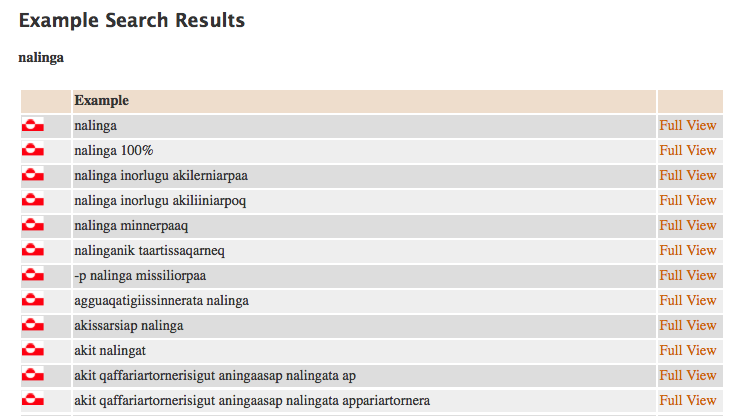
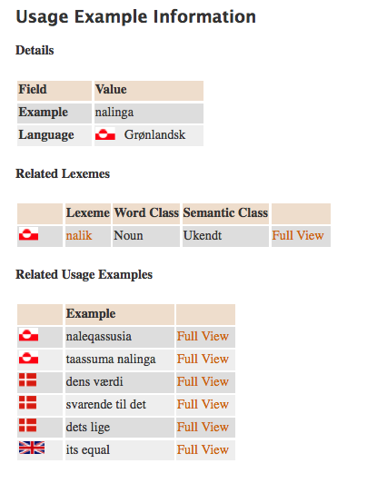
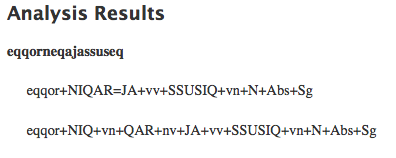
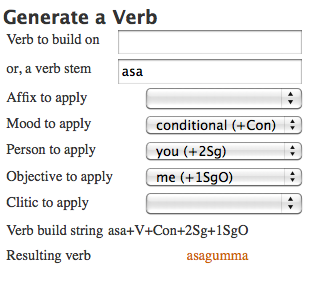

Kapitlet gennemgår et par vigtige offentligt tilgængelige hjælpemidler og introducerer det korpus, der ligger på DVD-en efter dette kapitel. Den bliver utvivlsomt din vigtigste "lærebog" i ganske lang tid fremover fra nu af.
Du har på nuværende tidspunkt brugt allermindst 100 arbejdstimer på at lære grønlandsk og sandsynligvis endnu mere tid. Og jeg gætter på, at du stadig føler, at du er langt fra at kunne tale det her sprog trods en seriøs indsats.
Det er endog sandsynligt, at du er gammeldags frustreret og mest af alt har lyst til at give helt op som næsten alle andre har gjort det før dig i de ca. 60 år, der er gået siden Grønlands kolonistatus blev ophævet.
Men før du gør det, så overvej lige følgende:
Når et barn forlader folkeskolen har det haft i omegnen af 1.000 engelsktimer og er stadig langt fra at tale engelsk bare tilnærmelsesvist flydende. De fleste voksne har glemt, hvor langsom en proces sprogindlæring er, og hvor voldsomt mange ressourcer, der skal lægges i processen for at få den til at virke. Og det er ikke lettere at lære grønlandsk end det var at lære engelsk.
Hvis du har gennemgået Grønlandsk for voksne efter anvisningerne, gennemarbejdet øvelserne og brugt den anbefalede tid på ordautomaterne, har du efterhånden fået en ganske sikker fornemmelse for lydreglerne og de vigtigste processer, der binder ord og sætninger sammen. Desuden har du rent faktisk lært en lille trediedel af alle grammatiske endelser - vel at mærke den trediedel, man hører oftest. Det er derfor min påstand, at du nu har værktøjerne til at gå ud i den virkelige verden og begynde at lære det her nye fremmedsprog på stort set samme måde, som du har lært andre fremmedsprog: Ved at høre og forstå, tygge på problemerne og teste dine teorier løbende samt ikke mindst ved at bruge dit sprog til noget reelt, nemlig som kommunikation med andre mennesker og til at skaffe dig mundtlig og skriftlig information, du ellers ikke ville have adgang til.
Dit udgangspunkt for videre læring er meget, meget bedre end dine forgængeres. Du har nemlig adgang til i praksis endeløse mængder af gratis "læremidler", der ikke fandtes for bare få år siden, nemlig hele suiten af elektroniske informationssystemer, som du nu har fået redskaberne til at kunne udnytte. Og der kommer nye til hvert år. Du kommer helt enkelt aldrig til at mangle stof til fortsat læring!
De næste afsnit vil dels gennemgå det korpus, der findes på DVD-en, og de værktøjer, der er tilgængelige på www.oqaaserpassualeriffik.org, og dels vil vi opstille et par skridt for skridt anvisninger på løsning af typiske problemer blandt de tusindvis af problemer, du kommer til at løbe ind i fremover.
De problemstillinger og løsninger, der bliver skitseret, er tænkt som eksempler på arbejdsrutiner. Afsnittet postulerer bestemt ikke at være udtømmende. Tværtimod! Der vil være hundredvis af situationer, hvor du selv må opfinde den strategi, der passer netop dig, for at håndtere et problem eller et spørgsmål.
Er de to nyeste traditionelle - dvs. bogudgivne - grønlandske ordbøger, nemlig den grønlandsk-danske Oqaatsit fra 1997 og den dansk-grønlandsk Ordbogen fra 2003. Det er også muligt at hente disse to ordbøger til sin egen Android mobil fra www.android.com og der arbejdes pt. (efteråret 2011) på også at tilbyde dem til iPhone.
oqaaserpassualeriffik.org tilhører og vedligeholdes på grønlandsk og engelsk af det sprogteknologiske projekt under Oqaasileriffik. Det er gratis at anvende den. Hvis du går ind under Linguistic tools får du adgang til en menu, hvorfra du kan vælge et program til en specifik opgave:
Corpus Query er pt. (efteråret 2011) tom, fordi der endnu ikke er kommet gang i arbejdet med at samle en national tekstsamling, som det kendes fra de fleste andre lande. Men for så vidt som Corpus Query allerede er brugsklar vil systemet kunne tages i brug straks nogen leverer de nødvendige tekster.
Til den tid vil systemet kunne levere oplysninger om brugen af enkeltord og levere såkaldte kollokationer (ordforbindelser med ord, som søgeordet typisk anvendes sammen med) i stil med det der kendes fra fx de danske korpusser og de fleste moderne ordbøger fx Gyldendals røde og sproget.dk, som er en hjemmeside produceret i et samarbejde mellem kulturministeriet, Dansk Sprognævn og Det Danske Sprog- og Litteraturselskab.
Dictionary Search åbner en meget stor trevejs leksikal database mellem dansk, grønlandsk og engelsk. Den hedder Katersat. Katersat er endnu (efteråret 2011) under udvikling og indeholder stadig temmeligt mange fejl, men dels er den langt den største grønlandske ordbog nogensinde, dels er det den eneste engelsk-grønlandske ordbog i det hele taget, og dels opdateres den løbende og relativt hurtigt, så det er bestemt en kilde, du skal vænne dig til at bruge.
Live Analysis er Oqaaserpassualeriffiks mest avancerede tool, men også den mest fejlbehæftede. Den opdateres oven i købet ganske langsomt i år (2011), fordi afdelingens ressourcer primært går til en nødvendig fornyelse af de to værktøjer nævnt herunder, men Live Analysis er prioriteret i 2012, så den vil hurtigt blive betydeligt mere pålidelig.
Den giver dig muligheden for at skrive en hel grønlandsk sætning og få den analyseret både morfologisk og syntaktisk, hvilket kan være en meget stor hjælp i situationer, hvor du hverken kan finde hoved eller hale i en sætning.
Word Analysis er systemets "traktor", der bryder ethvert ord ned i alle dets tilhæng, endelser og tilhængspartikler. I tilfælde af flere mulige analyser/ betydninger af et ord opregner analysatoren helt enkelt alle muligheder, hvilket ikke sjældent giver nogle højst overraskende betydninger.
Word Generator bliver du sikkert hurtigt meget glad for. Det er et værktøj, der bygger færdige ord for dig på basis af de behov, du selv mader systemet med. Hvis du fx gerne vil udtrykke "det var fordi I ikke så mig" og ikke lige kan huske endelsen "fordi I-mig" (det er Vb+gassiŋa) eller evt. kan huske, at der var en specialitet ved Vb-NNGIT fulgt af causativ uden lige at kunne huske hvad specialiteten egentlig bestod i, kan du gøre følgende:
Verb stem - skriv: taku
Affix to apply - vælg: -nngilaq (+NNGIT+vv)
Mood to apply - vælg: causative (+Cau)
Person to apply - vælg: you (+2Pl)
Objective to apply - vælg: me (+1SgO)
og du vil se at systemet allerede har givet dig den korrekte form takunnginnassinga.
Den i mange år absolut eneste person, der seriøst forsøgte at inddrage ny teknologi i grønlandskfaget er Henrik Aagesen. Hans Qimawin og dens anden udgave GroenOrd er et imponerende pionerarbejde, der samler størstedelen af al den leksikale viden, der findes om grønlandsk, i en enkelt CD, der er hurtig at finde rundt i. Jeg kan kun anbefale dig at købe den og vænne dig til at anvende den sammen med online ordbogen. De to kilder supplerer i nogen grad hinanden, idet Henrik har en del ældre ordbogsstof med, som ikke findes i Katersat, der til gengæld opdateres løbende bl.a. med de nyeste beslutninger fra Grønlands sprognævn.
Når du har vænnet dig lidt til arbejdsformen bliver korpusset med stor sandsynlighed din vigtigste forbundsfælle det næste års tid eller så. Korpus baserer sig på tosprogede avisartikler fra Atuagagdliutit. Samlingen indeholder godt 35.000 ord grønlandske ord, hvilket svarer til ca. 60.000 danske ord. Desuden ligger samtlige grønlandske ord som analyserede strenge af stamme +tilhæng +endelser +tilhængspartikler og en tag, der fortæller hvilken funktion ordet har i den sætning, det er taget fra.
Der sker det, at når du søger på noget - det kan være et ord, et tilhæng, en endelse eller en tilhængspartikel - vil søgeprogrammet give dig det første ord, hvori din søgning indgår og vil samtidig give dig hele den sætning, som ordet er taget fra. Endelig vil den give dig Atuagagdliutits oversættelse til dansk af den grønlandske sætning.
Når du så har læst og forstået og gentaget ikke alene det aktuelle ord, men også så meget som muligt af konteksten, og bagefter noteret og gjort alt det du kan for at udnytte netop denne stump information maksimalt, klikker du 'næste' og får så et nyt eksempel, som du også malker for al den viden, du kan trække ud. Etc. etc. På den måde kan der være timers arbejde i ganske få eksempler, men samtidig masser af god læring.
Der følger et par eksempler på et par mulige spørgsmål blandt de mange hundrede, du kan sidde inde med, og et par anvisninger på mulige arbejdsmetoder efter denne gennemgang. Men husk at anvisningen kun er tænkt som et eksempel. Det er dig og dig alene, der nu har ansvaret for at tilpasse og udnytte alle de for hånden værende muligheder på en sådan måde, at de giver dig maksimal indlæring. Og hvordan den måde er, ved ingen bedre end dig selv!
Lad mig gentage den opfordring, du allerede kender fra LearnGreenlandic.com: Sørg for at skaffe dig et netværk, hvis du ikke allerede har et! Det har du forhåbentligt allerede haft under turen gennem de otte kapitler før dette, men hvis det ikke er tilfældet, er du nu nødt til at komme frit frem. Den fase, du nu er på vej ind i uden et struktureret forløb at holde dig til, kommer under alle omstændigheder til at trække tænder ud.
Du har kort sagt brug for støtte, og der sidder med garanti en masse motiverede mennesker og venter på den støtte, som du kan yde dem. Få etableret en gruppe nu. Hvis du ikke lige har den rette slags personer i din nærmeste omgangskreds, kan du gå ind på LearnGreenlandic.com under Forum. Der har du en mulighed for at lave et kom-frit-frem opslag. Udnyt den mulighed!
Her er en helt typisk situation: Du er ved at betale med dankort i Brugsen og hører kassedamen sige nalinganut og efter en kort pause sikekrt også På beløbet?
Den normale, men dårlige reaktion set fra et indlæringssynspunkt, er at smile pænt, sige Aap og ikke rigtigt tænke videre over situationen. Du klarede kommunikationen ved hjælp af situationen eller måske af kassedamens danske oversættelse. Hvis det går rigtigt højt lærer du dig måske, at nalinganut betyder På beløbet.
Men er det faktisk et tilstrækkeligt udbytte af den situation? Det er det helt klart ikke, for du har ikke fået noget med dig til anvendelse uden for netop denne ene specielle situation. Er der fx noget i denne dialog, der kan hjælpe dig med at udtrykke tanker som 'store beløb' eller 'værdier' eller mere komplekse ting som 'værditilvækst'?
En anden mulighed er også, at du har opsnappet ord som nalitsinni ('i vor tid/ nu om stunder') eller naleqartitaq ('en værdi (både etisk og økonomisk)') og fornemmer, at de har noget med nalinganut at gøre. Men hvordan?
Den rigtige reaktion set fra et indlæringssynspunkt er at du går hjem og undersøger sagen bevidst!
Et opslag i DAKA giver dig ikke nalinganut, men næsten:
nalinga t værdien, dens værdi, svarende til det
Dernæst kan du jo prøve lykken i Katersat. Heller ikke her finder du nalinganut, men nalinga giver mange resultater. Her er det første dusin af søgningen som den ser ud i dag (efterår 2011):

Ved at klikke lidt rundt i eksemplerne får du hurtigt en fornemmelse af, at nalinga ret entydigt betyder 'dens værdi i penge' og at det er den form, der indgår i mange økonomiske fagudtryk som 'inflation' og 'pari'.
Du kunne stoppe her, men du kan også klikke dig lidt videre for at forstå ordet endnu bedre. Her er et klik på 'Full View' ud for nalinga (efterår 2011):

Det er åbenbart leksemet nalik, der er stammen i nalinganut. Igen kan vi klikke på Full View og få nye informationer bl.a. at nalik ikke kan anvendes uden personendelser og at ordet er beslægtet med dansk beløb. Ved at klikke på beløb får vi følgende:
Du kan på nuværende tidspunkt vælge at slå dig til tåls med det du foreløbig har lært, men du kan også vælge at fortsætte, fx ved at klikke på nali og se hvor det bringer dig hen.
Efter en tids klikken rundt vil du få et billede af sammenhængen selv om den faktisk er ganske kompliceret1.
Men du kan komme meget længere ved at bruge korpus, for i korpus finder du nemlig eksempler på, hvor og hvordan ordene konkret bruges. Prøv fx at søge på <nalik>2. Her er det første eksempel:
Ordet du søgte:
"<nalinginut>" "nalik" N Trm Pl 3PlPoss @ADVL>
Som står i sætningen:
Siunnersuummi attartortunut ilaqutariinnut ataasiakkaanut illuliani affarleriinnilu najugaqartunut illut tunineqassatillugit akikillisaasiisoqartassanngilaq, illut niuerutigineqarnerminni nalinginut tunineqartalissammata, akikillisaasiisarnermut aaqqissuussinermut nutaamut ineqarnermut pisortaqarfimmiit oqaaseqaatini allassimavoq. Som modsvares af: Der gives i forslaget ikke nedlag i salgsprisen for lejere, der bor i enfamilie- og dobbelthuse, der altid sælges til markedsværdien, står det i den nye rabatordnings bemærkninger fra boligdirektoratet.
Det fremgår, at nalik på dette sted står i terminalis flertal og er "deres" nalik. @ADVL> fortæller endvidere, at hele ordet nalinginut lægger sig til det følgende verbum - det er adverbalt.
Når vi læser ordet ind i konteksten opdager vi - evt. efter adskillige nye opslag i DAKA og Katersat - at nalik her er en del af udtrykket 'markedsværdi' som er oversat som niuerutigineqarnerminni nalingi (i-deres-bliven-handlet deres-nalik).
På den måde har vi lært rigtigt meget nyt og har samtidig fået repeteret gammel viden og snust til ny viden, vi måske endnu ikke har ressourcerne til at udnytte helt, men det kommer med tiden.
Dette er et eksempel på en rutine, som helt enkelt giver knaldgod læring!
Her er en anden helt typisk situation nemlig den der opstår hver gang du møder et nyt tilhæng.
Første gang du støder på ordet eqqorneqajassuseq søger du måske først i DAKA uden at finde noget før du forsøger dig med Katersat.
Heller ikke her giver eqqorneqajassuseq resultat, så du prøver med lidt kortere former. eqqorneqaja giver heller ikke noget, men eqqorneqa giver dig et resultat med eqqorneqaat, der betyder 'en træffer' og som samtidig giver dig den for dit aktuelle ord brugbare oplysning, at første del af ordet består af den transitive stamme eqqor fulgt af passiv med Vb+NIQAR. Du er måske på sporet.
Men du ved stadig ikke, hvad det er der foregår efter NIQAR, så et opslag i 'Word Analyser' kunne måske hjælpe.
Her er resultatet af eqqorneqajassuseq:

Som det fremgår, kan ordet analyseres på to forskellige måder, men i begge analyser optræder tilhænget Vb-JA, som betyder 'tilbøjelig til at Vb'. Betydningen kan du fx udlede af et opslag i Oqaatsit under tilhængene.
Det tilhæng vil du gerne have styr på, så du kaster dig over korpus. Her er første hit på <JA>:
Ordet du søgte:
"<eqqorneqajassuseq>" "eqqor" NIQAR = JA vv SSUSIQ vn N Abs Sg @<SUBJ
Som står i sætningen:
Tamatumunnga atatillugu eqqorneqajassuseq silallu allanngoriartorneranut naleqqussarnissaq naliliiffigineqassapput, Kalaallit Nunaanni allamut naleqqussarnissaq pisariaqartoq pillugu pilersaarusiornissaq atorneqarluarsinnaasoq isumagineqassalluni.
Som modsvares af:
Samtidig skal det vurdere sårbarhed og tilpasning til klimaændringer, som vil være direkte anvendelige i planlægningen af den nødvendige omstillingsproces i Grønland.
Ordet du søgte:
"<tunniutiinnajallutillu>" "tunniup" INNAR = JA vv V Inf 4Pl LU @i-ADVL> Som står i sætningen: Ilulissani aalisartut ukiuni 100-ni misilittagaqartut aalajaallutik tunniutiinnajallutillu suliuartuunerata aalisarnermi tunisassiornermilu ataavartumik suliffissaqartitsiuarnerat pissusissamisuuginnarpoq, taamaammallu suliffissuaqarnikkut ingerlallualeruttornermi sulisussanik amigaateqarnerit tusarsaalersarput, Som modsvares af: Fiskerne i Ilulissat, med deres erfaringer igennem 100 år er utrættelige og stabile fiskere, der skaber arbejde på land og til søs, og det er kun naturligt, at der kommer udmeldinger om mangel på arbejdskraft i højsæsonen.og så fremdeles. Efter en række opslag af denne slags - inklusive de nødvendige vild- og omveje, du bliver nødt til at foretage dig for at forstå sætningerne, Vb-JA er taget fra - vil du ud over at opnå en fornemmelse af tilhænget have lagt endnu et lille lag af nyttig viden til din indlæring.
Conditionalis hedder den verbalform, vi ikke nåede at snuse til i de foregående ni lektioner, så du vil jo nok løbe ind i problemer af typen "Hvordan udtrykker jeg 'hvis du elsker mig' eller 'Når vi er blevet gift'".
Allerførst kan du jo teste formerne med Word Generator. Først 'Hvis du elsker mig'

Den korrekte form er altså asagumma. Så kan vi prøve 'Når vi er blevet gift'. Den viser sig ikke at være helt så ligetil, for ordgeneratoren kan kun håndtere ganske få tilhæng. Bl.a. kan den ikke klare Vb-RIIR, som vi har brug for i denne situation. Vi bliver derfor nødt til at gå et skridt baglæns og nøjes med formen på basis af grundformen 'Når vi bliver gift':

Vi kan se, at det er endelsen Vb+gutta, vi har brug for, så det bør være en enkelt sag for dig nu at danne den ønskede form {katip-RIIR+gutta} ⇒ katereerutta.
Dernæst kan vi gå i gang med korpus og læse/ forstå/ gentage så mange forekomster af conditionalis, vi har kræfter til at behandle. Her er det første eksempel på en søgning efter <Con>:
Ordet du søgte:
"<namminiilivippat>" "nammineer" LIR = VIP vv V Con 3Sg @CON
Som står i sætningen:
Aningaasat taakku Kalaallit Nunaat namminiilivippat annaaneqassapput. Som modsvares af: Penge, som Grønland vil miste, hvis det bliver selvstændigt.
Ordet du søgte:
"<pisartagarineqarunnaarpata>" "pisar" TAR vv TAQ vn GE nv NIQAR = GUNNAIR vv V Con 3Pl @CON Som står i sætningen: Taakku pisartagarineqarunnaarpata innuttaasut nunani ineriartortitani inuuniarnermi atugassarititaasut qaffaseqataannik inuuneqalernissartik naatsorsuutigisariaqassavaat, lektor Lise Lyck, Copenhagen Business Schoolimeersoq, isumaqarpoq. Som modsvares af: Uden dem vil befolkningen skulle indstille sig på at leve på ulandsniveau, mener lektor Lise Lyck fra Copenhagen Business School.osv. osv. i meget lang tid. Men så skal du nok også få det lært.
Rigtigt god arbejdslyst!!
Per Langgård
1nalik og nali er faktisk bare om to varianter af samme stamme. Den gamle, næsten uddøde up-bøjning er med tiden er blevet specialiseret i betydningen 'økonomisk modsvarighed' og har efterladt de andre typer af modsvarighed til den mere moderne p-bøjning nali, der så kan "nøjes" med at dække begreber i tid og rum
2Vinkelparenteserne er ikke en del af søgeudtrykket, så dem skal du ikke skrive